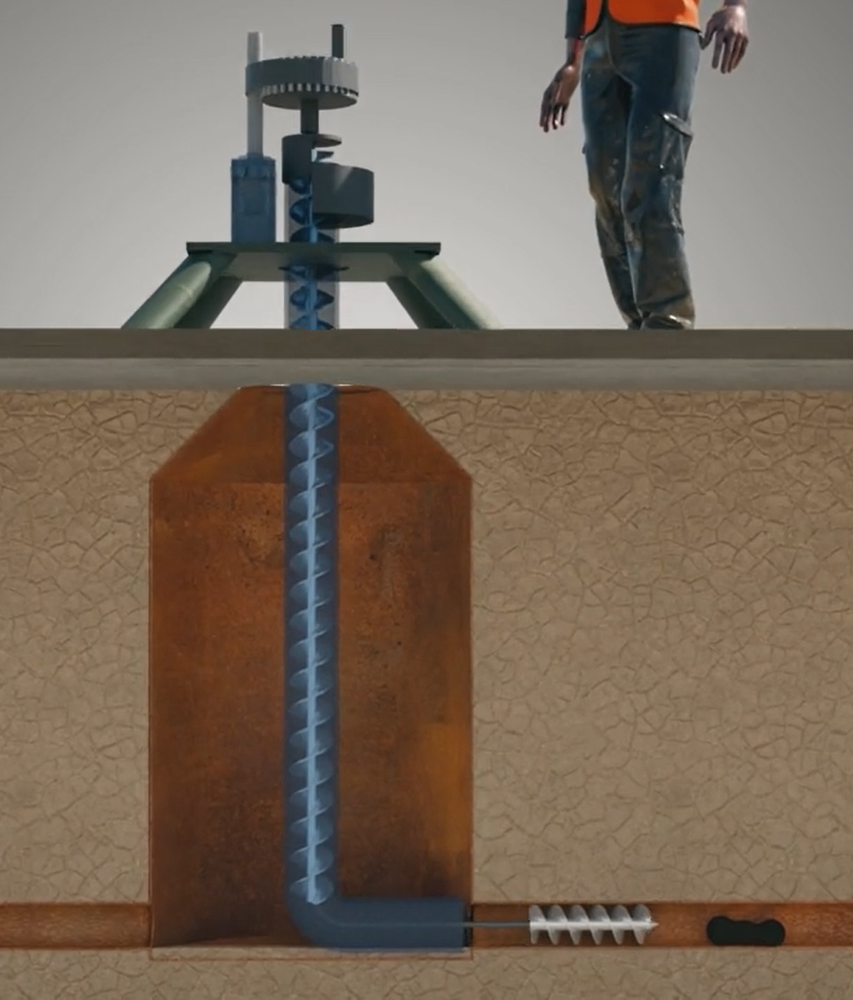
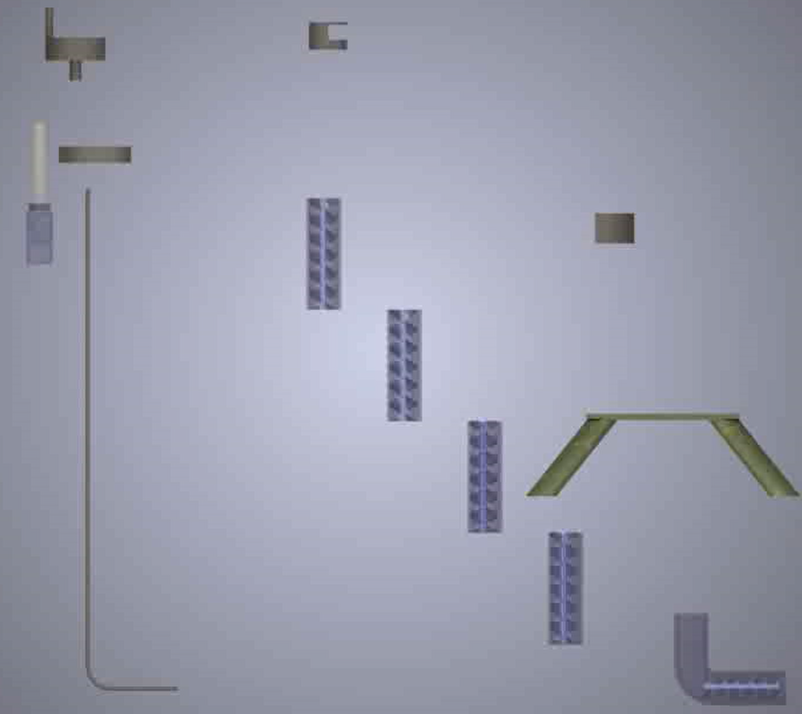

The Problem
Manual scavenging — people entering manholes by hand to clear sewage clogs — still employs an estimated 1.5 million cleaners in India. The average lifespan of a manual scavenger is just 45 years, a consequence of toxic working conditions and constant exposure to hazardous gases. There was no effective, affordable way to clear a clogged sewer line without sending a person down into it.

The Idea
The device is placed on top of a manhole and lowered inside until it aligns with the sewage line. Once aligned, the operator switches on a motor that drives a horizontal helical screw with a pointed end, which drills through the clog. The drilling debris is transported up through a guiding pipe to the surface, where it's collected and disposed of.
CAD animation of the Archimedean screw drilling through a clog and clearing the debris.
Why Not Existing Solutions
A few alternatives already exist, but each falls short. The Bandicoot robot costs around ₹32 lakh and is difficult to train workers on. Sewer suction trucks are bulky, expensive, and can't pump out dried sludge. Water-jet trucks only flush the clog further down the line instead of removing it, wasting large amounts of water in the process.
Design
The machine is engineered to be segmented, so sections can be added or removed to match the depth of a given manhole.

Outcome
The project was selected among the top 10 teams from 23 IITs at Invention Factory, and patent applications were filed in India and the United States. The goal throughout was simple: clean the manhole without anyone having to go down inside it — eliminating manual scavenging and the risk that comes with it.